library(tidyverse) # Tidy data processing and plotting
library(ggformula) # Formula based plots
library(mosaic) # Our go-to package
library(skimr) # Another Data inspection package
library(correlation) # Different Types of Correlations
# From the easystats collection of packages
library(GGally) # Corr plots
library(corrplot) # More corrplots
library(ggExtra) # Making Combination Plots
library(Lock5withR) # Datasets
library(palmerpenguins) # A famous dataset
# Set plot theme
ggplot2::theme_set(new = theme_classic(base_size = 14, base_family = "sans"))📎 Correlations
Correlations
Correlations
Scatter Plots
Bubble Plots
2D Density Plots
Heatmaps
Regression Lines
Abstract
How one variable changes with another
Slides and Tutorials
| Tutorial | R (Interactive Graphs |
One of the basic Questions we would have of our data is: Does some variable depend upon another in some way? Does \(y\) vary with \(x\)? A Correlation Test is designed to exactly answer this question.
The word correlation is used in everyday life to denote some form of association. We might say that we have noticed a correlation between rainy days and reduced sales at supermarkets. However, in statistical terms we use correlation to denote association between two quantitative variables. We also assume that the association is linear, that one variable increases or decreases a fixed amount for a unit increase or decrease in the other. The other technique that is often used in these circumstances is regression, which involves estimating the best straight line to summarise the association.
The degree of association is measured by a correlation coefficient, denoted by r. It is sometimes called Pearson’s correlation coefficient after its originator and is a measure of linear association. (If a curved line is needed to express the relationship, other and more complicated measures of the correlation must be used.)
The correlation coefficient is measured on a scale that varies from + 1 through 0 to – 1. Complete correlation between two variables is expressed by either + 1 or -1. When one variable increases as the other increases the correlation is positive; when one decreases as the other increases it is negative.
In formal terms, the correlation between two variables \(x\) and \(y\) is defined as
\[ \rho = E\left[\frac{(x - \mu_{x}) * (y - \mu_{y})}{(\sigma_x)*(\sigma_y)}\right] \]
where \(E\) is the expectation operator ( i.e taking mean ). Think of this as the average of the products of two scaled variables.
Pearson Correlation uses z-scores
We can see \((x-\mu_x)/\sigma_x\) is a centering and scaling of the variable \(x\). Recall from our discussion on Distributions that this is called the z-score of x.
Pearson correlation assumes that the relationship between the two variables is linear. There are of course many other types of correlation measures: some which work when this is not so. Type vignette("types", package = "correlation") in your Console to see the vignette from the correlation package that discusses various types of correlation measures.
A quick reminder on how mosaic and ggformula work in a very similar fashion:
mosaic and ggformula command template
Note the standard method for all commands from the mosaic and ggformula packages: goal( y ~ x | z, data = _____)
With ggformula, one can create any graph/chart using: gf_***(y ~ x | z, data = _____)
In practice, we often use: dataframe %>% gf_***(y ~ x | z) which has cool benefits such as “autocompletion” of variable names, as we shall see. The “***” indicates what kind of graph you desire: histogram, bar, scatter, density; the “___” is the name of your dataset that you want to plot with.
And on the ggplot command syntax:
ggplot command template
The ggplot2 template is used to identify the dataframe, identify the x and y axis, and define visualized layers:
ggplot(data = ---, mapping = aes(x = ---, y = ---)) + geom_----()
Note: —- is meant to imply text you supply. e.g. function names, data frame names, variable names.
It is helpful to see the argument mapping, above. In practice, rather than typing the formal arguments, code is typically shorthanded to this:
dataframe %>% ggplot(aes(xvar, yvar)) + geom_----()
HollywoodMovies2011 dataset
Let us look at the HollywoodMovies2011 dataset from the Lock5withR package.
HollywoodMovies2011-> movies
glimpse(movies)Rows: 136
Columns: 14
$ Movie <fct> "Insidious", "Paranormal Activity 3", "Bad Teacher",…
$ LeadStudio <fct> Sony, Independent, Independent, Warner Bros, Relativ…
$ RottenTomatoes <int> 67, 68, 44, 96, 90, 93, 75, 35, 63, 69, 69, 49, 26, …
$ AudienceScore <int> 65, 58, 38, 92, 77, 84, 91, 58, 74, 73, 72, 57, 68, …
$ Story <fct> Monster Force, Monster Force, Comedy, Rivalry, Rival…
$ Genre <fct> Horror, Horror, Comedy, Fantasy, Comedy, Romance, Dr…
$ TheatersOpenWeek <int> 2408, 3321, 3049, 4375, 2918, 944, 2534, 3615, NA, 2…
$ BOAverageOpenWeek <int> 5511, 15829, 10365, 38672, 8995, 6177, 10278, 23775,…
$ DomesticGross <dbl> 54.01, 103.66, 100.29, 381.01, 169.11, 56.18, 169.22…
$ ForeignGross <dbl> 43.00, 98.24, 115.90, 947.10, 119.28, 83.00, 30.10, …
$ WorldGross <dbl> 97.009, 201.897, 216.196, 1328.111, 288.382, 139.177…
$ Budget <dbl> 1.5, 5.0, 20.0, 125.0, 32.5, 17.0, 25.0, 80.0, 0.2, …
$ Profitability <dbl> 64.672667, 40.379400, 10.809800, 10.624888, 8.873292…
$ OpeningWeekend <dbl> 13.27, 52.57, 31.60, 169.19, 26.25, 5.83, 26.04, 85.…skimr::skim(movies)| Name | movies |
| Number of rows | 136 |
| Number of columns | 14 |
| _______________________ | |
| Column type frequency: | |
| factor | 4 |
| numeric | 10 |
| ________________________ | |
| Group variables | None |
Variable type: factor
| skim_variable | n_missing | complete_rate | ordered | n_unique | top_counts |
|---|---|---|---|---|---|
| Movie | 0 | 1 | FALSE | 136 | 30 : 1, 50/: 1, A D: 1, A V: 1 |
| LeadStudio | 0 | 1 | FALSE | 34 | Ind: 32, War: 12, 20t: 9, Uni: 9 |
| Story | 0 | 1 | FALSE | 22 | Mon: 19, Com: 14, Que: 13, Lov: 12 |
| Genre | 0 | 1 | FALSE | 9 | Act: 32, Com: 27, Dra: 21, Hor: 17 |
Variable type: numeric
| skim_variable | n_missing | complete_rate | mean | sd | p0 | p25 | p50 | p75 | p100 | hist |
|---|---|---|---|---|---|---|---|---|---|---|
| RottenTomatoes | 2 | 0.99 | 53.19 | 26.98 | 4.00 | 29.25 | 53.50 | 78.00 | 97.00 | ▅▇▅▆▇ |
| AudienceScore | 1 | 0.99 | 61.60 | 17.03 | 24.00 | 49.50 | 61.00 | 76.50 | 93.00 | ▂▆▇▇▆ |
| TheatersOpenWeek | 16 | 0.88 | 2828.48 | 932.70 | 3.00 | 2550.00 | 2995.00 | 3400.50 | 4375.00 | ▁▁▂▇▃ |
| BOAverageOpenWeek | 16 | 0.88 | 8338.83 | 10284.47 | 1513.00 | 3778.75 | 5685.50 | 8923.00 | 93230.00 | ▇▁▁▁▁ |
| DomesticGross | 2 | 0.99 | 63.22 | 69.42 | 0.02 | 19.03 | 37.35 | 80.46 | 381.01 | ▇▂▁▁▁ |
| ForeignGross | 15 | 0.89 | 96.92 | 156.44 | 0.24 | 14.25 | 47.00 | 102.00 | 947.10 | ▇▁▁▁▁ |
| WorldGross | 2 | 0.99 | 150.74 | 215.02 | 0.03 | 30.71 | 76.66 | 173.69 | 1328.11 | ▇▁▁▁▁ |
| Budget | 2 | 0.99 | 53.48 | 49.17 | 0.20 | 20.25 | 36.50 | 70.00 | 250.00 | ▇▂▂▁▁ |
| Profitability | 2 | 0.99 | 3.31 | 6.62 | 0.00 | 1.06 | 2.20 | 3.67 | 64.67 | ▇▁▁▁▁ |
| OpeningWeekend | 3 | 0.98 | 20.34 | 24.81 | 0.00 | 7.71 | 13.10 | 25.00 | 169.19 | ▇▁▁▁▁ |
Business Insights from Data Inspection
movies has 136 observations on the following 14 variables.
- Movie a factor with many levels
- LeadStudio a factor with many levels
- RottenTomatoes a numeric vector
- AudienceScore a numeric vector
- Story a factor with many levels
- Genre a factor with levels
Action, Adventure, Animation, Comedy, Drama, Fantasy, Horror, Romance,Thriller. - TheatersOpenWeek a numeric vector
- BOAverageOpenWeek a numeric vector
- DomesticGross a numeric vector
- ForeignGross a numeric vector
- WorldGross a numeric vector
- Budget a numeric vector
- Profitability a numeric vector
- OpeningWeekend a numeric vector
There are no missing values in the Qual variables; but some entries in the Quant variables are missing. skim throws a warning that we may need to examine later.
Let us look at the Quant variables: are these related in anyway? Could the relationship between any two Quant variables also depend upon the level of a Qual variable?
Some of the very basic and commonly used plots for data are:
- Scatter Plot
- Contour Plot
- Pairwise Correlation Plots
- Correlogram
- Heatmap
Which are the numeric variables in movies?
Now let us plot their relationships.
# Set graph theme
ggplot2::theme_set(new = theme_classic(base_size = 14, base_family = "sans"))
##
movies %>%
gf_point(DomesticGross ~ WorldGross) %>%
gf_lm(title = "Scatter Plot",
subtitle = "Movie Gross Earnings: Domestics vs World")
##
movies %>%
gf_point(Profitability ~ OpeningWeekend) %>%
gf_lm(title = "Scatter Plot",
subtitle = "Movies: Does Opening Week Earnings indicate Profitability?")
##
movies %>% gf_point(RottenTomatoes ~ AudienceScore) %>%
gf_lm(title = "Scatter Plot",
subtitle = "Movie Ratings: Tomatoes vs Audience")
##
ggplot2::theme_set(new = theme_classic(base_size = 14,
base_family = "sans"))
##
## We can split some of the scatter plots using one or other of the Qual variables. For instance, is the relationship between the two ratings the same, regardless of movie genre?
movies %>%
drop_na() %>%
gf_point(RottenTomatoes ~ AudienceScore,
color = ~ Genre) %>%
gf_lm()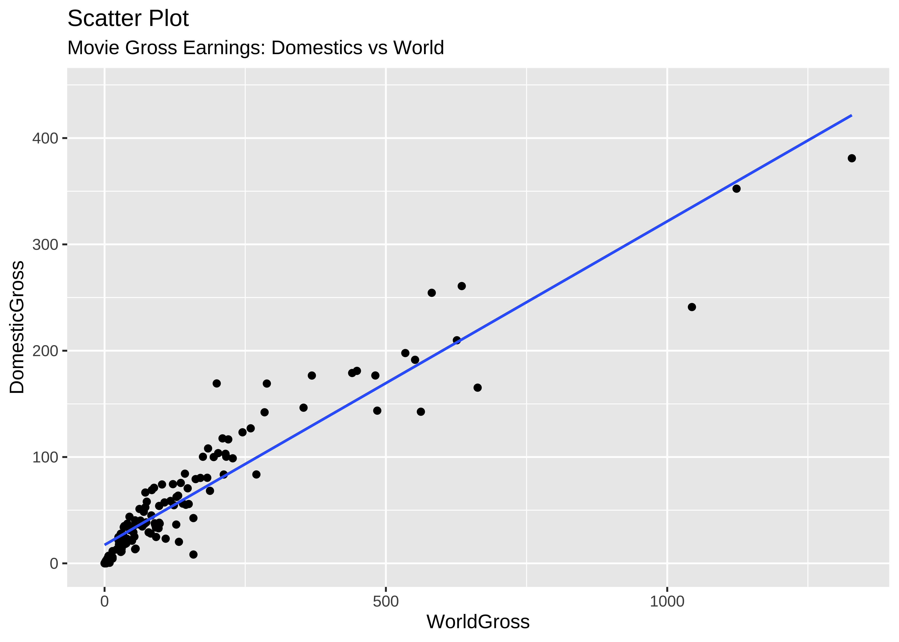
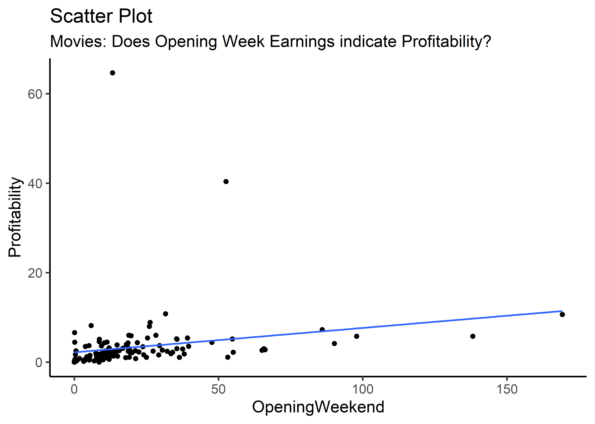
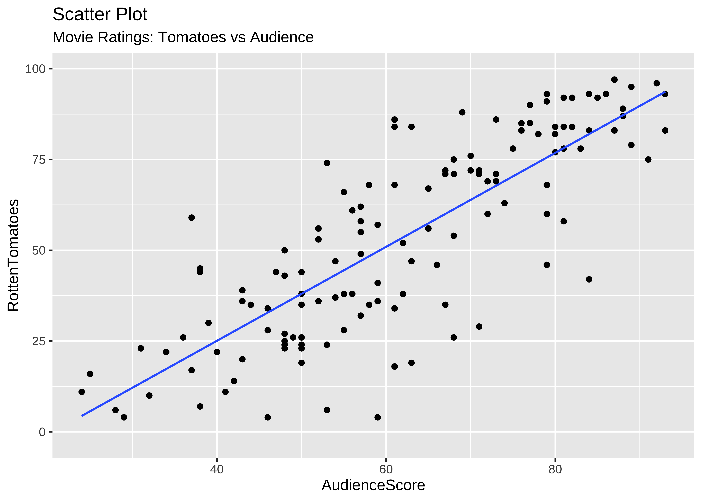
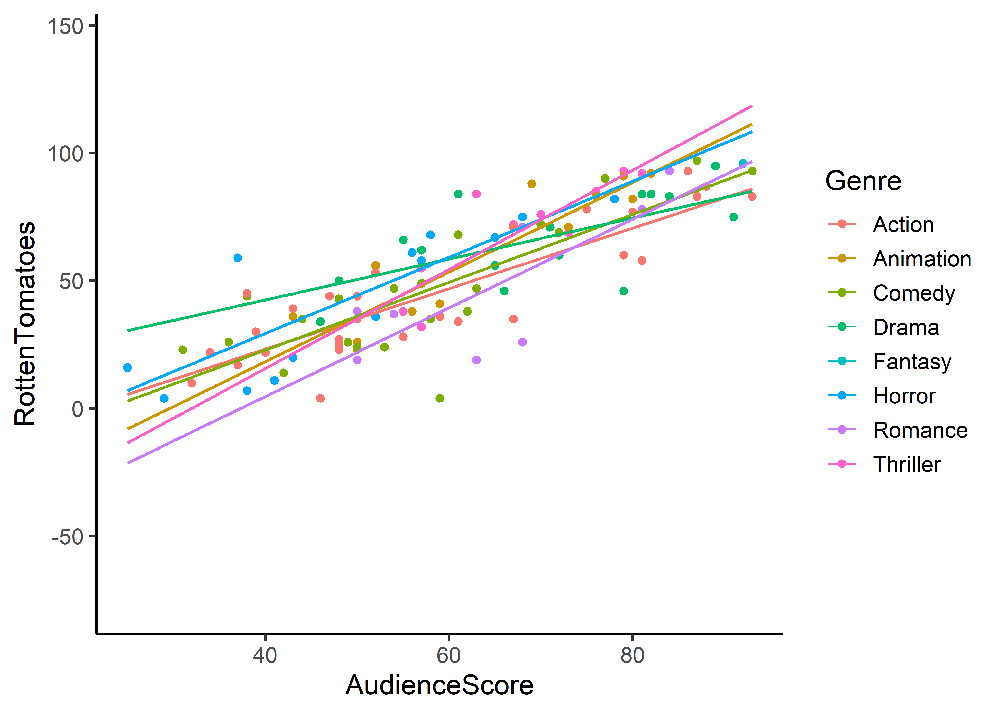
# Set graph theme
ggplot2::theme_set(new = theme_classic(base_size = 14,
base_family = "sans"))
##
movies %>% ggplot(aes(x = DomesticGross,y = WorldGross)) +
geom_point() +
geom_lm(title = "Scatter Plot",
subtitle = "Movie Gross Earnings: Domestics vs World")
##
movies %>% ggplot(aes(OpeningWeekend,Profitability)) +
geom_point() +
geom_lm(title = "Scatter Plot",
subtitle = "Movies: Does Opening Week Earnings indicate Profitability?")
##
movies %>% ggplot(aes(AudienceScore,RottenTomatoes)) +
geom_point() +
geom_lm(title = "Scatter Plot",
subtitle = "Movie Ratings: Tomatoes vs Audience")
##
movies %>%
drop_na() %>%
ggplot(aes(RottenTomatoes, AudienceScore, color = Genre)) +
geom_point() +
geom_smooth(method = "lm", se = FALSE)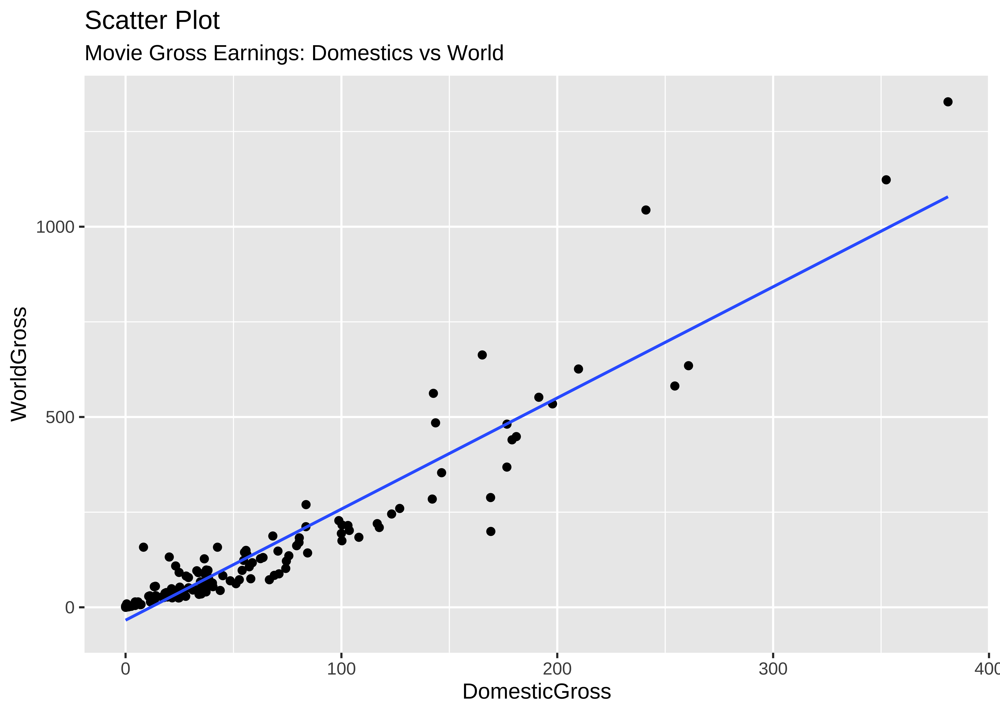
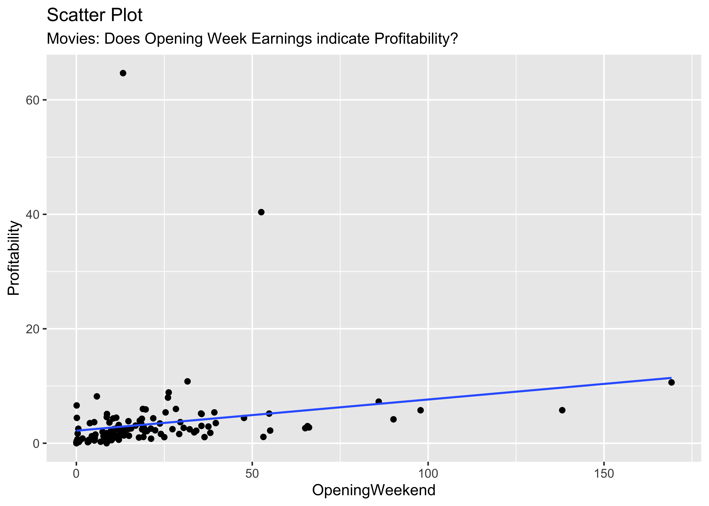
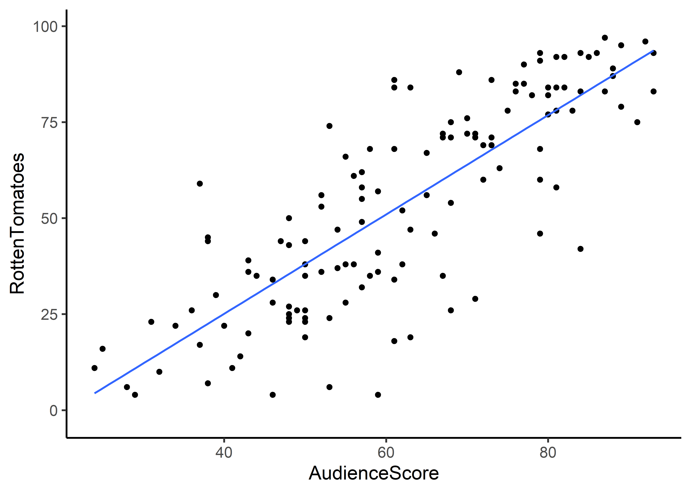
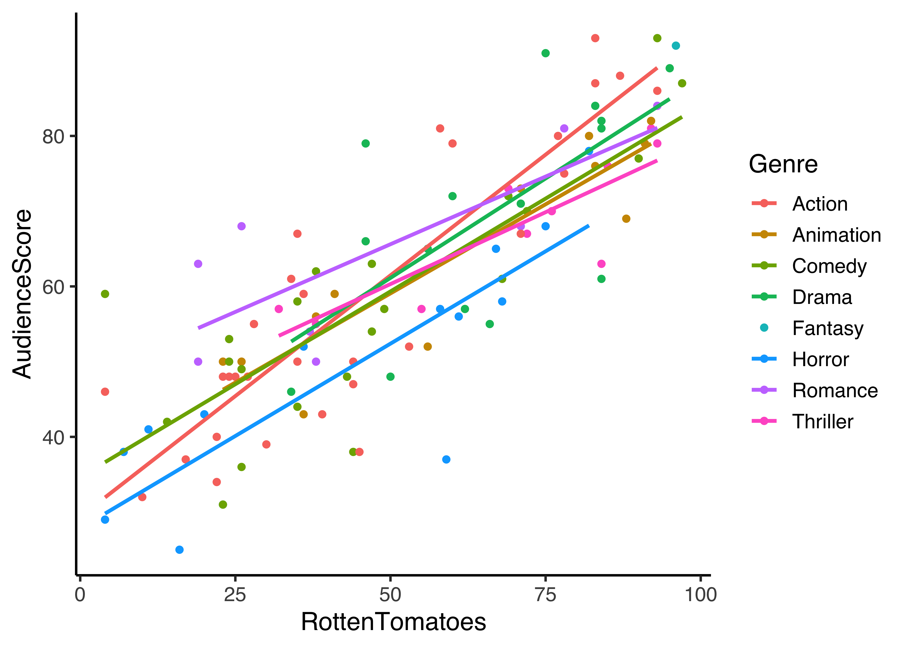
Business Insight from
movies scatter plots
We have fitted a trend line to each of the scatter plots.
-
DomesticGrossandWorld Grossare related, though there are fewer movies at the high end ofDomesticGross… -
AudienceScoreandRottenTomatoesseem clearly related…both increase together. -
OpeningWeekandProfitabilityare also related in a linear way. There are just two movies which have been extremely profitable..but they do not influence the slope of the trend line too much, because of their location midway in the range ofOpeningWeek. Influence is something that is a key concept in Linear Regression. - By and large, there are only small variations in slope across
Genres.
# Set graph theme
ggplot2::theme_set(new = theme_classic(base_size = 14,
base_family = "sans"))
##
movies %>%
drop_na() %>%
gf_density_2d(WorldGross ~ DomesticGross) %>%
gf_point() %>%
gf_lm(title = "Scatter Plot",
subtitle = "Movie Gross Earnings: Domestics vs World")
##
movies %>%
drop_na() %>%
gf_density_2d(Profitability ~ OpeningWeekend) %>%
gf_point() %>%
gf_lm(title = "Scatter Plot",
subtitle = "Movies: Does Opening Week Earnings indicate Profitability?")

# Set graph theme
ggplot2::theme_set(new = theme_classic(base_size = 14,
base_family = "sans"))
movies %>%
drop_na() %>%
gf_density_2d(RottenTomatoes ~ AudienceScore) %>%
gf_point() %>%
gf_lm(title = "Scatter Plot",
subtitle = "Movie Ratings: Tomatoes vs Audience")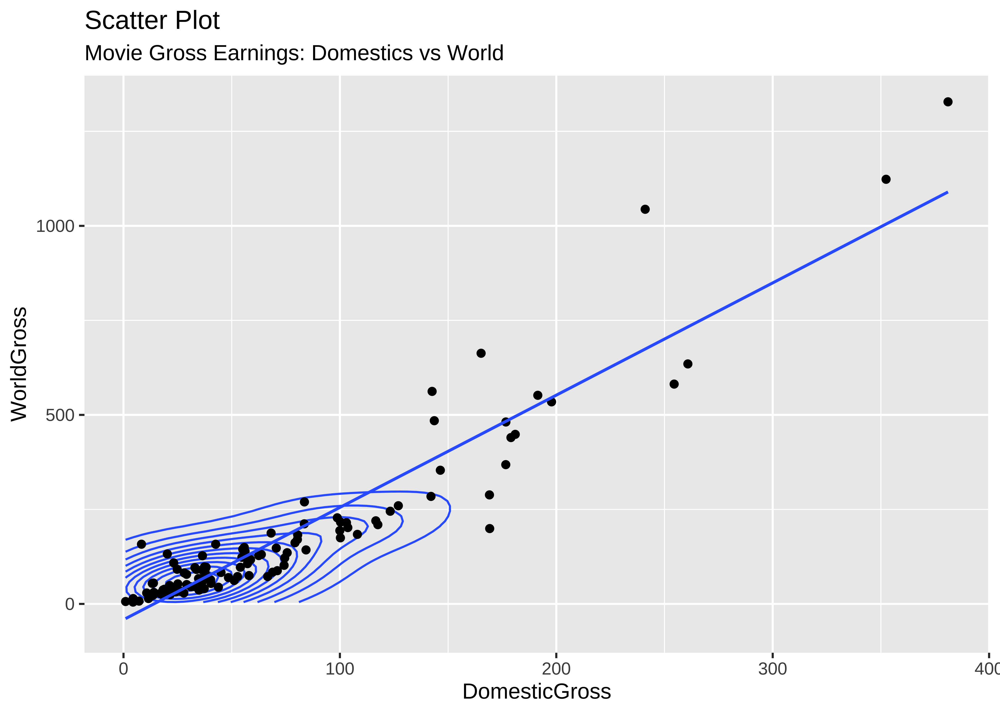
# Set graph theme
ggplot2::theme_set(new = theme_classic(base_size = 14,
base_family = "sans"))
##
movies %>% drop_na() %>%
ggplot(aes(DomesticGross, WorldGross)) +
geom_density_2d() +
geom_point() +
geom_lm() +
labs(title = "Scatter Plot",
subtitle = "Movie Gross Earnings: Domestics vs World")
##
movies %>% drop_na() %>%
ggplot(aes(OpeningWeekend,Profitability)) +
geom_density2d() +
geom_point() +
geom_lm() +
labs(title = "Scatter Plot",
subtitle = "Movies: Does Opening Week Earnings indicate Profitability?")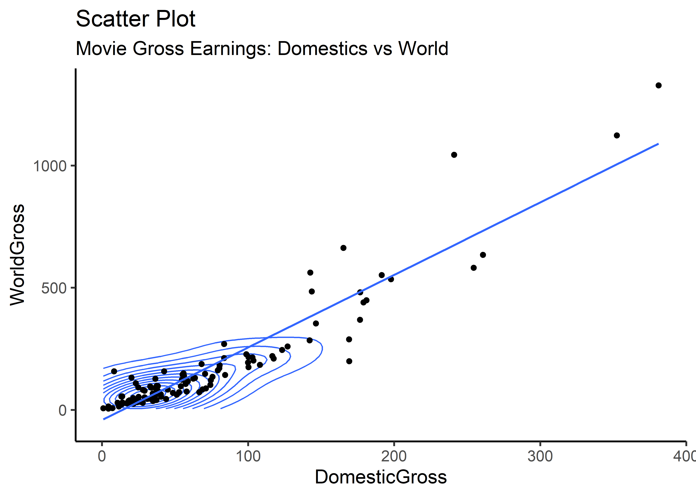
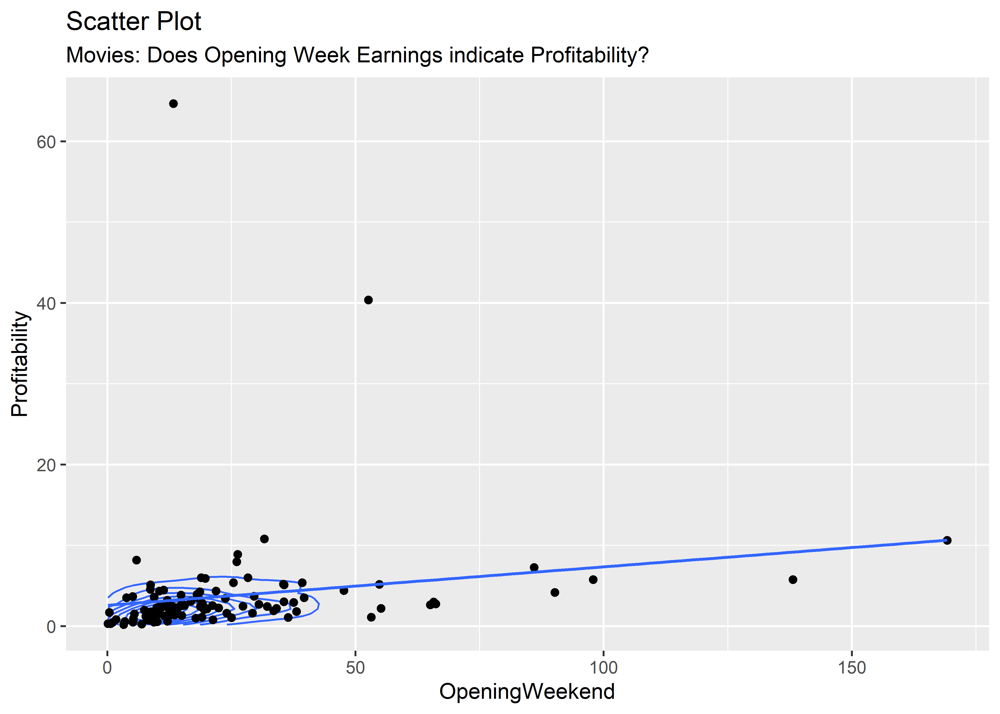
# Set graph theme
ggplot2::theme_set(new = theme_classic(base_size = 14,
base_family = "sans"))
##
movies %>% drop_na() %>%
ggplot(aes(AudienceScore, RottenTomatoes)) +
geom_density_2d() +
geom_point() +
geom_lm() +
labs(title = "Scatter Plot",
subtitle = "Movie Ratings: Tomatoes vs Audience")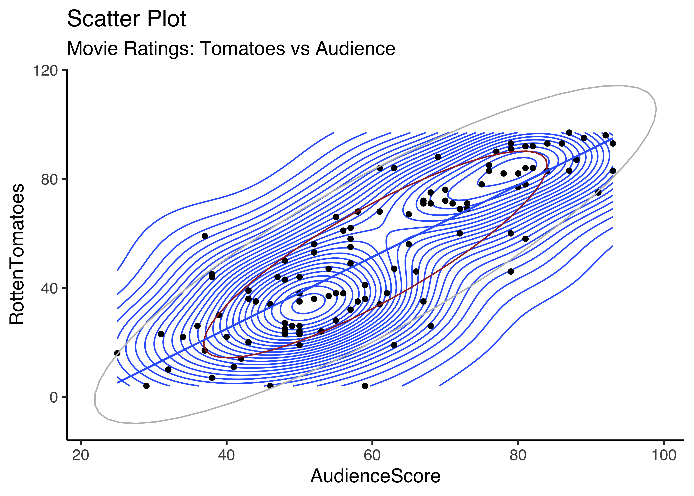
Business Insight from
movies 2D plots
The 2D density show us areas inscribed by closed contours where the values of the two variables fixed. The more concentrated and aligned these contours, the more likely that there would be significant correlation between the two.
In the plot above, we can see two such areas of concentration and these are also aligned roughly along a line.
Independent and Dependent Variables
Note that we have rather arbitrarily taken AudienceScore as the independent variable, to be plotted on the x-axis, and RottenTomatoes on the y-axis. It could easily have been the other way around, based on our Research Question. Datasets are gathered with specific Research Hypotheses in mind, so check the help file and also with the person who gathered the data about what variable they are interested in!
So we see that there are visible relationships between Quant variables. How do we quantize this relationship, into a correlation score?
There are two ways: using the GGally and corplot packages, and doing a formal correlation test with the mosaic package.
By default, GGally::ggpairs() provides:
- two different comparisons of each pair of columns
- displays either the density or count of the respective variable along the diagonal.
- With different parameter settings, the diagonal can be replaced with the axis values and variable labels.
[1] "RottenTomatoes" "AudienceScore" "TheatersOpenWeek"
[4] "BOAverageOpenWeek" "DomesticGross" "ForeignGross"
[7] "WorldGross" "Budget" "Profitability"
[10] "OpeningWeekend" GGally::ggpairs(
movies %>% drop_na(),
# Select Quant variables only for now
columns = c(
"RottenTomatoes", "AudienceScore", "DomesticGross","ForeignGross"),
switch = "both",
# axis labels in more traditional locations(left and bottom)
progress = FALSE,
# no compute progress messages needed
# Choose the diagonal graphs (always single variable! Think!)
diag = list(continuous = "barDiag"),
# choosing histogram,not density
# Choose lower triangle graphs, two-variable graphs
lower = list(continuous = wrap("smooth", alpha = 0.3, se = FALSE)),
title = "Movies Data Correlations Plot #1"
) +
theme_bw()
Business Insight from Pairs Plot#1
- As we saw earlier from the Scatter Plot,
AudienceScoreandRottenTomatoesare well correlated, with a correlation score of \(0.833\) -
DomesticGrossandForeignGrossare also extremely well correlated, with a score of \(0.873\). - Both these correlation scores are highly significant, with three stars. (We will speak of significance in a while.)
- None of the other pairs of variables have good correlation scores.
- Note in passing that both the “Gross” related variables have highly skewed distributions. That is the nature of the movie business!
Let us also try a few other variables, related to budget and profits. For instance, it would be interesting to see the relationship between Budget and Profitability and even either of the “gross” earnings and Profitability.
GGally::ggpairs(
movies %>% drop_na(),
# Select Quant variables only for now
columns = c(
"Budget", "Profitability", "DomesticGross", "ForeignGross"),
switch = "both",
# axis labels in more traditional locations(left and bottom)
progress = FALSE,
# no compute progress messages needed
# Choose the diagonal graphs (always single variable! Think!)
diag = list(continuous = "barDiag"),
# choosing histogram,not density
# Choose lower triangle graphs, two-variable graphs
lower = list(continuous = wrap("smooth", alpha = 0.3, se = FALSE)),
title = "Movies Data Correlations Plot #2"
) +
theme_bw()
Business Insight from Pairs Plot #2
- The
Budgetvariable has good correlation scores withDomesticGrossandForeignGross -
ProfitabilityandBudgetseem to have a very slight negative correlation, but this does not appear to be significant.
In this chart, the correlation between pairs of variables is shown symbolically as coloured shapes or colours. Circles, Squares, and Ellipse for example.
- The size, colour, and “orientation” of the shapes in question symbolically represent the strength and polarity of the correlation scores.
- The direction of the semi-major axis + the colour of the ellipse indicate whether the correlation score is positive or negative;
- And the more eccentric the ellipse, the higher is the correlation score in value.
Note
Whereas GGally computes the correlation scores, corplot “merely” displays them in an evocative way. We need to compute the correlations a priori.
Note also:
Tip
R package corrplot provides a visual exploratory tool on correlation matrix that supports automatic variable reordering to help detect hidden patterns among variables. corrplot is very easy to use and provides a rich array of plotting options in visualization method, graphic layout, color, legend, text labels, etc. It also provides p-values and confidence intervals to help users determine the statistical significance of the correlations.
# library(corrplot)
mydata_cor <- cor(movies_quant)
mydata_cor %>%
knitr::kable(caption = "Correlation Scores Matrix")
## View the matrix
corrplot(mydata_cor, method = "number",
number.cex = 0.6,
cl.cex = 0.6, tl.cex = 0.6)
# Default plot with circles
corrplot(mydata_cor,
method = "circle",
main = "Correlogram with Circles")
# Ellipse plot
corrplot::corrplot(mydata_cor,
method = "ellipse",
main = "Correlogram with Ellipes")
# Heatmap
corrplot::corrplot(mydata_cor, method = "color", ## US Spelling only
main = "Correlogram")
# Heatmap with numbers
corrplot::corrplot.mixed(mydata_cor,
lower = "color",number.cex = 0.6,
cl.cex = 0.6, tl.cex = 0.6,
upper = "number",
tl.pos = "l",
main = "Heatmap?")| RottenTomatoes | AudienceScore | TheatersOpenWeek | BOAverageOpenWeek | DomesticGross | ForeignGross | WorldGross | Budget | Profitability | OpeningWeekend | |
|---|---|---|---|---|---|---|---|---|---|---|
| RottenTomatoes | 1.0000000 | 0.8329740 | -0.0873543 | 0.1823480 | 0.2085935 | 0.0979132 | 0.1356232 | -0.0147887 | 0.1502764 | 0.0986304 |
| AudienceScore | 0.8329740 | 1.0000000 | 0.0259118 | 0.1851768 | 0.3849406 | 0.2557891 | 0.3037927 | 0.1268649 | 0.1047582 | 0.2695132 |
| TheatersOpenWeek | -0.0873543 | 0.0259118 | 1.0000000 | 0.0117674 | 0.5981162 | 0.4850569 | 0.5344582 | 0.5924941 | 0.0547807 | 0.5977724 |
| BOAverageOpenWeek | 0.1823480 | 0.1851768 | 0.0117674 | 1.0000000 | 0.4713164 | 0.4522253 | 0.4710352 | 0.2880262 | 0.0964176 | 0.5043684 |
| DomesticGross | 0.2085935 | 0.3849406 | 0.5981162 | 0.4713164 | 1.0000000 | 0.8725927 | 0.9374780 | 0.6497274 | 0.1812387 | 0.9232259 |
| ForeignGross | 0.0979132 | 0.2557891 | 0.4850569 | 0.4522253 | 0.8725927 | 1.0000000 | 0.9880383 | 0.6707613 | 0.1230330 | 0.8487202 |
| WorldGross | 0.1356232 | 0.3037927 | 0.5344582 | 0.4710352 | 0.9374780 | 0.9880383 | 1.0000000 | 0.6830783 | 0.1448857 | 0.8962294 |
| Budget | -0.0147887 | 0.1268649 | 0.5924941 | 0.2880262 | 0.6497274 | 0.6707613 | 0.6830783 | 1.0000000 | -0.1437862 | 0.6228180 |
| Profitability | 0.1502764 | 0.1047582 | 0.0547807 | 0.0964176 | 0.1812387 | 0.1230330 | 0.1448857 | -0.1437862 | 1.0000000 | 0.1713962 |
| OpeningWeekend | 0.0986304 | 0.2695132 | 0.5977724 | 0.5043684 | 0.9232259 | 0.8487202 | 0.8962294 | 0.6228180 | 0.1713962 | 1.0000000 |


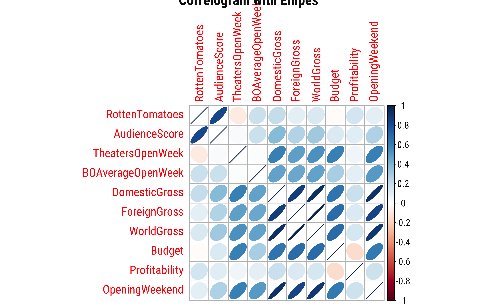
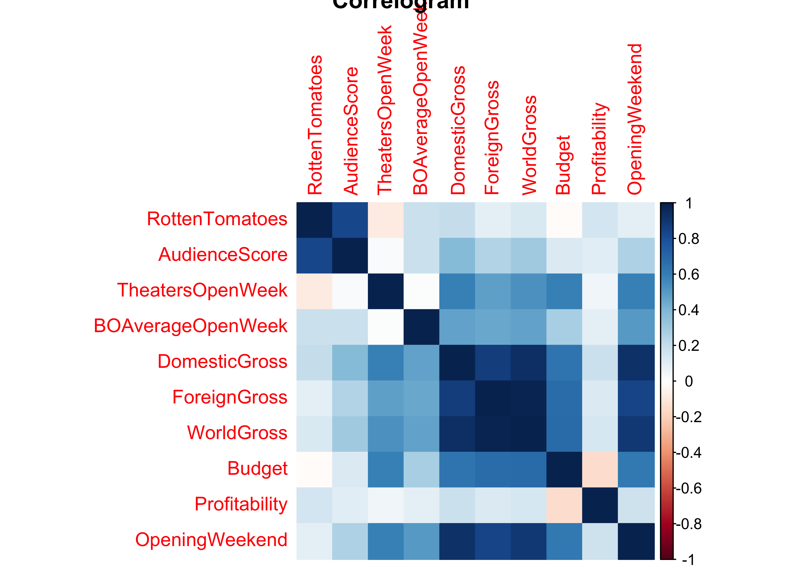
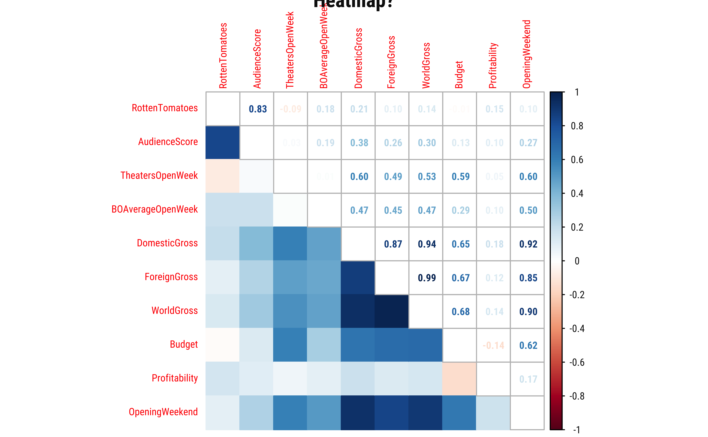
Business Insights from corplots
- Most of the variables here have positive correlations, many of them are significant
Doing a Correlation Test
Correlations scores can be obtained by conducting a formal test in R. We will use the mosaic function cor_test to get these results:
mosaic::cor_test(Profitability ~ Budget, data = movies) %>%
broom::tidy() %>%
knitr::kable(digits = 2,
caption = "Movie Profitability vs Budget")| estimate | statistic | p.value | parameter | conf.low | conf.high | method | alternative |
|---|---|---|---|---|---|---|---|
| -0.08 | -0.96 | 0.34 | 132 | -0.25 | 0.09 | Pearson’s product-moment correlation | two.sided |
mosaic::cor_test(DomesticGross ~ Budget, data = movies) %>%
broom::tidy() %>%
knitr::kable(digits = 2,
caption = "Movie Domestic Gross vs Budget")| estimate | statistic | p.value | parameter | conf.low | conf.high | method | alternative |
|---|---|---|---|---|---|---|---|
| 0.7 | 11.06 | 0 | 131 | 0.6 | 0.77 | Pearson’s product-moment correlation | two.sided |
mosaic::cor_test(ForeignGross ~ Budget, data = movies) %>%
broom::tidy() %>%
knitr::kable(digits = 2,
caption = "Movie Foreign Gross vs Budget")| estimate | statistic | p.value | parameter | conf.low | conf.high | method | alternative |
|---|---|---|---|---|---|---|---|
| 0.69 | 10.22 | 0 | 118 | 0.58 | 0.77 | Pearson’s product-moment correlation | two.sided |
Business Insights from Correlation Tests
The budget and profitability are not well correlated, sadly. We see this from the p.value which is \(0.34\) and the confidence values for the correlation estimate which also cover \(0\).
However, both DomesticGross and ForeignGross are well correlated with Budget. Look at the p.value (=0) and the confindence intervals which are unipolar.
A New Combination Plot…
Sometimes, a simple scatter, or density alone, or viewed next to one another is not adequate to develop, or convey, our insight. We might just need a combination density + scatter plot. Such a plot can be be constructed from the ground up using ggformula or ggplot; however, there is a nice package called ggExtra that allows the creation of a powerful combination plot:

Our workflow for evaluating correlations between target variable and other predictor variables uses several packages such as GGally, corrplot, and of course mosaic for correlation tests. We will explore more R code for these in the tutorials Section 1.
Minimal R using mosaic. https://cran.r-project.org/web/packages/mosaic/vignettes/MinimalRgg.pdf
Antoine Soetewey. Pearson, Spearman and Kendall correlation coefficients by hand https://www.r-bloggers.com/2023/09/pearson-spearman-and-kendall-correlation-coefficients-by-hand/
Attali, Dean, and Christopher Baker. 2023. ggExtra: Add Marginal Histograms to “ggplot2,” and More “ggplot2” Enhancements. https://CRAN.R-project.org/package=ggExtra.
Schloerke, Barret, Di Cook, Joseph Larmarange, Francois Briatte, Moritz Marbach, Edwin Thoen, Amos Elberg, and Jason Crowley. 2023. GGally: Extension to “ggplot2”. https://CRAN.R-project.org/package=GGally.
Wei, Taiyun, and Viliam Simko. 2021. R Package “corrplot”: Visualization of a Correlation Matrix. https://github.com/taiyun/corrplot.
Citation
BibTeX citation:
@online{v.2022,
author = {V., Arvind},
title = {📎 {Correlations}},
date = {2022-11-22},
url = {https://av-quarto.netlify.app/content/courses/Analytics/Descriptive/Modules/30-Correlations/intro-corr.html},
langid = {en},
abstract = {How one variable changes with another}
}
For attribution, please cite this work as:
V., Arvind. 2022. “📎 Correlations.” November 22, 2022. https://av-quarto.netlify.app/content/courses/Analytics/Descriptive/Modules/30-Correlations/intro-corr.html.